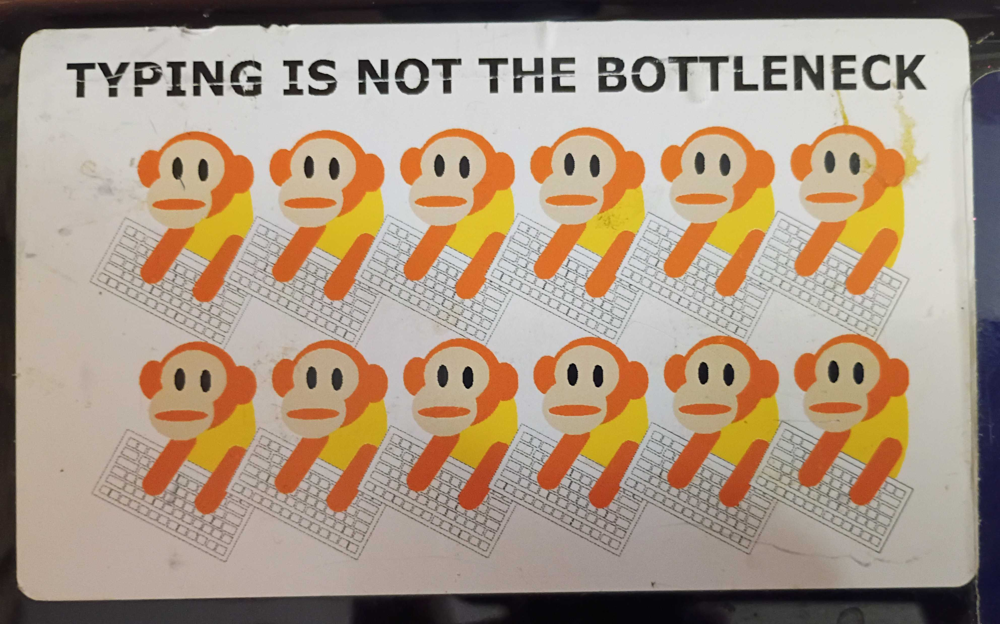

🎬 OBS Production Flow
8 SCENES
Monologue / Full Camera
Opening: "Typing is not the bottleneck." Dell Studio XPS PP35L with monkey sticker: Obtiva's sole .NET project, Mike's Vim transition, and demo vs dirt.
Reaction: Video Focus
YouTube 8LYHo1dOkMo playback. Scrub to 00:11 (speech onset) & 04:08 (acoustic ghost).
Split Screen: Research
Side-by-side with just3ws.localhost case study & Whisper transcript diff.
Workbench: Code & CLI
Terminal live demo: fix_video.sh --help, man page, filtergraph SIMD C speed.
Outro: Sovereign Synthesis
Straight to legacy vs AI slop conclusion. The Homer Simpson Car & Mjolnir.
🎙️ Active Teleprompter & Talking Points
SCENE 02: MONOLOGUE
The Genesis Prompt // 13 Words to Multi-Tier Architecture
"recording a video under high tension wires repair audio sync"
The Premise: With generative AI, you go from that exact vague Google search to an entire DSP restoration fabric, MCP server, 44.3% compounding fragility calculus, and broadcast curriculum.
The Central Operating Premise: "What's the difference between straight to legacy and AI slop? Nothing, nobody really understood what went in there either way."
Phase 0.9 // Scene 02 // The Historical Mirror
"Typing Is Not the Bottleneck": The Dell Studio XPS PP35L
"For thirty years, whenever a new abstraction arrived, the promise was always the same: 'Look how much faster you can produce code.' But typing was never the bottleneck. Reading, comprehending, and verifying has always been the bottleneck."

Dell Studio XPS PP35L 16" OLED (2009)
CONTEMPORARY ARTIFACT
"I am holding the physical proof right here: my Dell Studio XPS PP35L 16-inch OLED laptop. It still has the original 'TYPING IS NOT THE BOTTLENECK' sticker right on it, complete with the two rows of monkeys hammering away on keyboards. I bought this machine specifically for an engagement with Obtiva. It turned out to be the first and only .NET project Obtiva ever took on, and it was my last .NET project before I switched permanently to a MacBook Pro and Vim. I stayed with Obtiva all the way through the Groupon acquisition. On this keyboard, we learned that generating syntax is cheap, but understanding the system boundaries is everything."
"Fast forward to today: generative AI accelerates typing by a factor of ten thousand. But if typing wasn't the bottleneck in 2009 on an XPS, inflating the volume of unread code in 2026 doesn't solve software engineering. It just accelerates how quickly we construct the mirage of competence."
Phase 1 // Scene 02 // The Seductive Trap
The Gap Between the Demo and the Dirt
"When people watch venture-backed commercial AI demos, they see miracles. They see a prompt turn into a Hollywood trailer in ten seconds. But what happens when you step out of the demo and walk under 345,000-volt transmission wires with a phone in a crosswind?"
"I didn't prompt an acoustic model. I typed one vague Google search: 'recording a video under high tension wires repair audio sync'. And Google's AI generated an immaculate spec that told me to stretch my voice with atempo=0.837. Within 30 seconds, my voice was slurred into drunken slow-motion. Over the next 4 days, on a $5/month promotional Gemini Pro plan, I burned through half a billion tokens (501M tokens across 3,695 steps) navigating the mirage of competence."
Phase 1.5 // Scene 02 // The Hitchhiker's Paradox
Deep Thought Answered 42: But What Was the Question?
"Like Deep Thought in The Hitchhiker's Guide to the Galaxy, the computer calculated for seven and a half million years and proudly answered: '42'. But nobody knew what the question was!"
"With generative AI, we got an answer to a question we don't even know how to comprehend, much less ask. We asked: 'fix the buzz and sync'. The machine answered '42' (atempo=0.837, 10 cascading notch filters, Butterworth pole placements). It answered with supreme mathematical certainty, but nobody in physical reality asked that question."
Phase 2 // Scene 02 // The Epistemic Razor
The Strawberry Paradox & Passing Specs as Comforting Lies
"In legacy enterprise systems, we run test suites to reassure ourselves that code 'works.' But green tests often measure comforting lies rather than reality. We ship slop every day because someone completed a ticket in isolation without understanding the broader architecture."
"With generative AI, we face this at civilizational scale: an LLM cannot reliably count the 'R's in 'Strawberry,' yet it can construct and reason through a 10-harmonic notch filter DSP pipeline. Where does responsibility land when millions of developers push uncomprehended AI code into production?"
Phase 2.2 // Scene 03 // Playback Scrub & Forensic Artifacts
Scrubbing YouTube 8LYHo1dOkMo: Speech Onset & The Acoustic Ghost
"Look closely at the raw YouTube master at 8LYHo1dOkMo. When we scrub to 00:11, notice the precise moment speech begins: the 60 Hz hum creates massive low-end masking that obscures natural vocal timbre."
"Then scrub forward to 04:08: a 25mph gust creates an acoustic ghost across the capsule diaphragm. An unguided AI model interprets wind turbulence as sustained low-frequency harmonic structure and attempts to notch out speech phonemes, completely degrading the audio envelope."
Key verification points: 00:00 (baseline hum), 00:11 (speech onset lip-sync), 04:08 (acoustic ghost wind gust), 18:11 (trailing silence).
Phase 2.5 // Scene 04 // The 0.85^n Trap
The Compounding Fragility of "Good Enough" Scaffolding
"Evaluating 'good enough' in isolation is a trap. When five 'good enough' components (each 85% reliable) are chained together, system determinism drops to 44.3%:"
| Stage | Component | Reliability |
|---|---|---|
| 1. DSP | Audio pass (phone grade) | 85% |
| 2. Whisper | Transcription (hallucinates on silence) | 85% |
| 3. Shell | Glue script (POSIX/BSD regex traps) | 85% |
| 4. Web | Publishing & syndication metadata | 85% |
| 5. OBS | Broadcast overlay determinism | 85% |
| 0.85^5 Pipeline Survival: | 44.3% | |
"The $10,000 saved on upfront engineering gets repaid as continuous operational fires unless verified by a human craftsman."
Phase 3 // Scene 05 // The Artifice Warning
The Homer Simpson Car ("Wait! Don't go! Just... trust me bro!")
"Look at what happened here. Herb Powell gave Homer unconstrained authority to build a car with no budget constraints. Homer added bubble domes, three horns that play La Cucaracha, and giant tailfins. What did Homer forget? He forgot to design a car that anyone actually needed to drive."
"The 150-line POSIX shell script is the minimal tool that actually hauls groceries in 14.8 seconds. The rest of this repository (the 10-panel dashboards, the 64-credit syllabus, the Groff man pages) is The Homer: magnificent, absurd, and held together by an engineer shouting 'Trust me bro!' into a microphone."
Phase 3.5 // Scene 05 // The Root Vulnerability
AI Psychosis: The Forest of Distraction & "Was It Even Fixed?"
"Think about the psychological spiral that just occurred: I went from 'help fix this video' to 'what will it take to pivot this into a first round funding?'"
"But was the video even fixed to begin with?"
This is the root of the AI psychosis. We become intoxicated by what is synthetically possible, and the model is only too happy to lead us by the hand through the forest of distraction. We spin up venture valuations, pitch decks, and enterprise architectures, while losing track of the physical ground truth sitting on disk.
This is the root of the AI psychosis. We become intoxicated by what is synthetically possible, and the model is only too happy to lead us by the hand through the forest of distraction. We spin up venture valuations, pitch decks, and enterprise architectures, while losing track of the physical ground truth sitting on disk.
The model never taps your shoulder to ask: 'Hey, did you actually check the original problem?' It just generates more branches, deeper paths, and richer foliage in whatever direction you glance.
Phase 4 // Scene 08 // Sovereign Grounding
And Yet, It IS Real
"The power lines are real. The 60 Hz hum was real. And the output master video sitting right here on my machine, with all 39,069 original 1080p camera frames preserved bit-for-bit without generational loss, and human speech restored to frame-accurate lip-sync, is real. Chicago Software Craftsmanship is learning how to walk that razor's edge: refusing the comforting lies of unverified hallucinations, while holding onto the empirical reality of the working tool."
⚡ Workbench Tool Belt
TERMINAL CLIs
Terminal Demo 01
~/ai/dehum/fix_video.sh --help
Terminal Demo 02
man ~/ai/dehum/fix_video.1
Terminal Demo 03
ruby bin/audit_tmi.rb
Terminal Demo 04
./bin/test_fix_video.sh
🎯 Video Playback Verification Jumps
01. Acoustic Baseline (Raw)
02. Speech Onset Lip-Sync
03. The Acoustic Ghost (25mph Gust)
04. Trailing Container Silence
🌐 Production Surface Links